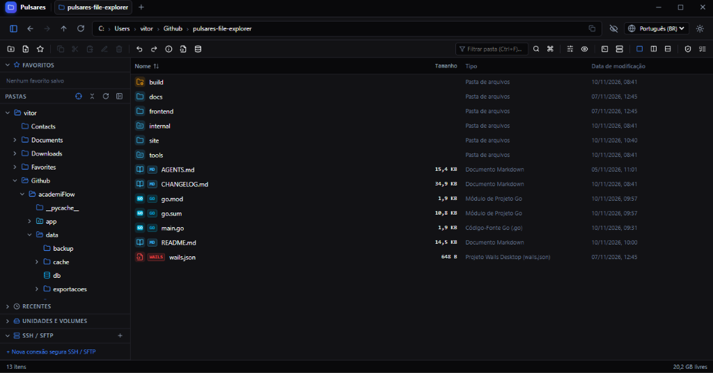

Nova versão disponível v1.1.1
Um explorador de arquivos com ferramentas integradas para quem desenvolve
Navegue por pastas locais e remotas, edite código, explore bancos SQLite e use o terminal sem sair do mesmo aplicativo. Multiplataforma, local-first e offline.
Windows 10/11
Linux
macOS
100% local e offline
Conheça a suíte por dentro
Capturas reais do aplicativo nos temas claro e escuro.

Pronto para experimentar?
Baixe gratuitamente o Pulsares Explorer para Windows, Linux ou macOS. Sem conta e sem telemetria.